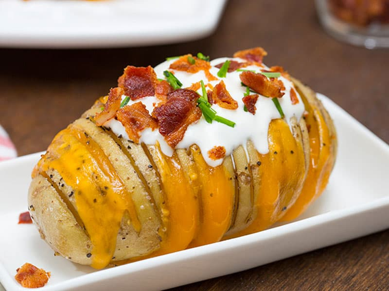

Papa al horno

A perfect baked potato has crispy skin and fluffy insides. My method for how to bake a potato works every time, so load up your spuds, and dig in!
- Prep time:1 hr
- Servings: 4
Ingredients:
- 4 large russet potatoes
- Extra virgin olive oil
- Salt
Directions:
- Preheat the oven to 425°F and line a baking sheet with parchment paper.
- Use a fork to poke a few holes into the potatoes. Place on the baking sheet, rub with olive oil, and sprinkle liberally with sea salt all over. Bake 45 to 60 minutes, or until the potato is fork-tender and the skin is crisp.
- Slice open each potato, fluff the insides, and serve with desired toppings.
Home
Return to top